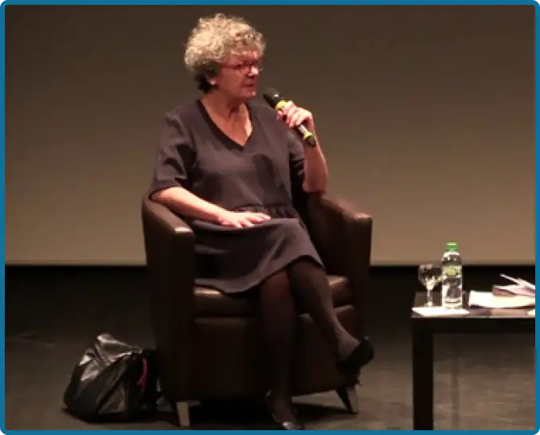

Une ère suffisamment avancée où l'homme prit conscience de l'égalité évidente des sexes.
Une ère moderne, où les mots d'Olympe de Gouge résonnent encore en chaque esprit éveillé:
"La femme naît libre et demeure égale à l'homme en droits."
Une ère de progrès, résultant de l'apprentissage de siècles d'erreurs passé, où plus jamais une femme ne sera
victime, par le seul fait d'être née fille....
Telle aurait été mes phrases d'introduction comme Dominique Sigaud, autrice de "La malédiction d'être fille"
aurait aimé les lire mais elle est la mieux placé pour savoir à quel point, tous ceci n'est que utopie.

Conférence avec Dominique Sigaud
dans le cadre des Grandes rencontres 2020
L'oeuvre d'une vie
Depuis le début des années 80 Dominique Sigaud parcours le monde entiers en quête de compréhension sur
les
cultures qui lui sont inconnues.
Ancien grand reporter , elle décide de quitter son emploie au NouvelObs pour des raison politique et de
consacrer pleinement sa vie à l'étude du monde, sur le terrain.
Son objectif n'est autre que faire découvrir, comprendre et partager les cultures de pays (souvent en
situation de conflits) qui suscite en elle l'incompréhension. Pour elle la meilleur manière de
comprendre un
pays n'est autre que de si rendre directement et d'enquêter.
De nature profondément féministe et humaniste, elle décide de se servir de ses talents de journaliste
ainsi
que de sa culture acquise durant ses précédent périple pour écrire un livre traitant de la situation
déplorable traversé par beaucoup de fille dans le monde.
En écrivant les premières ligne d'introduction de son brouillon au courant de 2016 la journaliste était
encore loin de s'imaginer que la situations serait si grave.
Un but informatif
Au fur et à mesure de ses voyages, Dominique Sigaud pus récolter des centaines de témoignages, tous plus
choquants les uns que les autres, à telle point que durant un temps, ses journée de travail ne pouvait
commencer autrement que par des pleures systématique au réveille.
Son objectif premier durant la rédaction de ce récit était de réussir à faire ouvrir les yeux du monde
sur
une malheureuse et macabre réalité.
Un constat de 230 pages sincère et brut qui ne perds pas de temps pour nous apprendre que non, les viols
à
répétition; les mutilations sexuelles ainsi que les mariages forcées, sont toujours une réalité
désastreuse
subit par des centaines de milliers de filles à travers le monde et ce même dans des pays considéré
comme
"développé".
Une épreuve longue de 3ans pour que plus jamais, au sujet de ces milliers de vie détruite, nous ne
puissions
dire "Je ne savais pas".
Un combat en vain ?
Conférence avec Dominique Sigaud
dans le cadre des Grandes rencontres 2020
Après la lecture du livre de Dominique Sigaud, la perte d'espoir en toute causes féministe est légitime,
mais
la situation désastreuse subit par ses milliers de voix silencieuse ne doit pas faire oublier tous le
chemins parcourus depuis le début du mouvement.
Depuis la déclaration des droits de la femme et de la citoyenne par Olympe de Gouges, jusqu'au mouvement
féminisme moderne telle que #metoo, la lutte des égalité homme femme n'a cessé d'évoluer et d'apporter
progrès et solution à l'avenir du monde.
En laissant Ada Lovelace étudier d'égale à égale les mathématiques avec Charles Babbage le féminisme
aida à
la construction du monde numérique que nous vivons aujourd'hui, en donnant le droit à Margaret Hamilton
de
rédiger le programme informatique des mission Apollo le féminisme à permit à l'humanité de poser le pied
sur
la lune, et en laissant le droit à Marie Curie de réaliser ses expérience le féminisme permit de
progresser
dans les domaines de la science et de la médecine.
Depuis toujours, sans que nous n'en rendant compte le féminisme à contribuée à travers de grandes
avancées à
bâtir ce que le monde est aujourd'hui.
Quelles serait aujourd'hui nos avancé dans les domaines de l'informatique, des science, de l'art, du
sport
ou de l'ingénierie... sans le génie des femmes ? La réponse tiens en deux mots: Bien moindre.
Le livre de Dominique Sigaud n'a pas pour vocation à susciter l'abandon, mais au contraire être une
justification supplémentaire à la lutte féministe, ainsi qu'un cri d'alerte au oreilles du monde.
La victoire est encore lointaine mais elle continuera de s'approcher tant que le combat continuera.